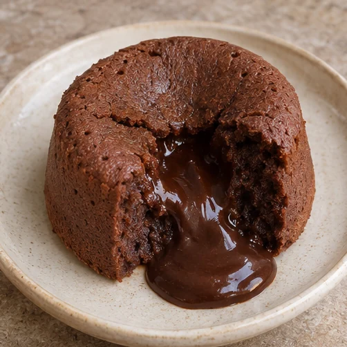
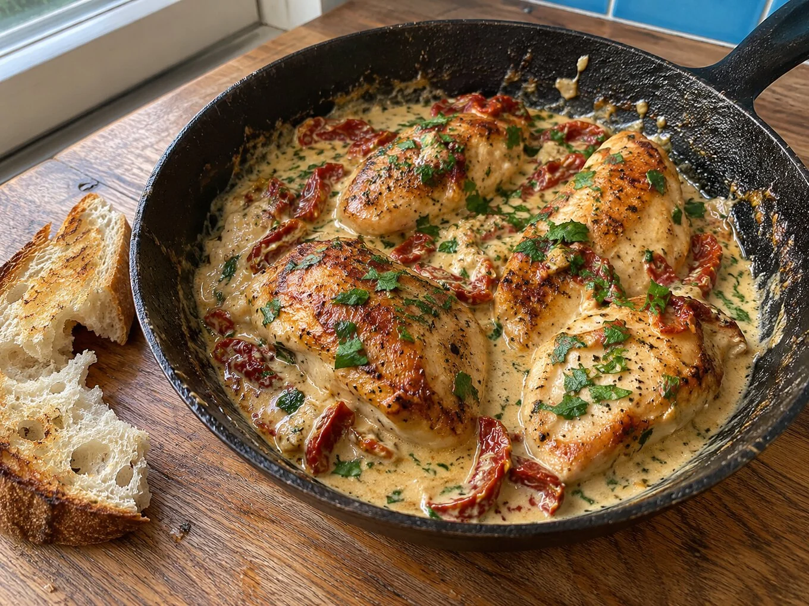
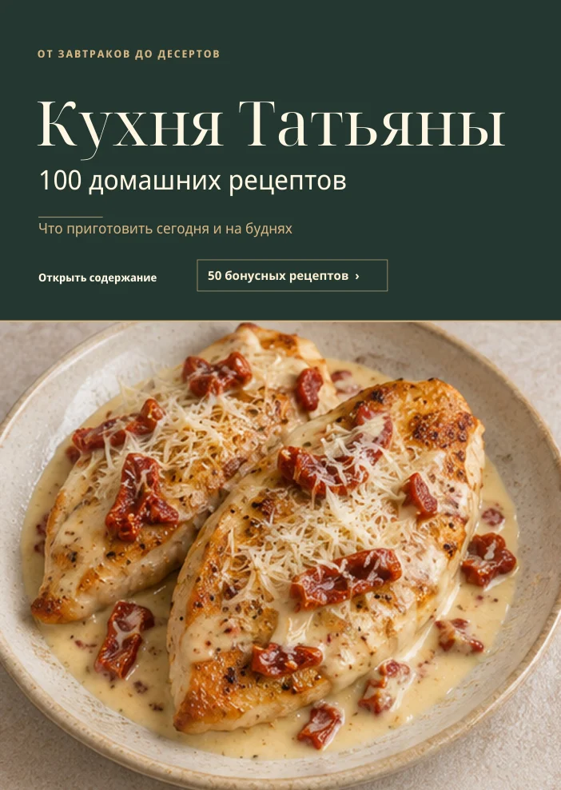
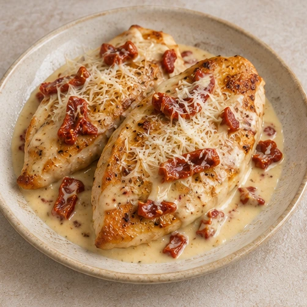
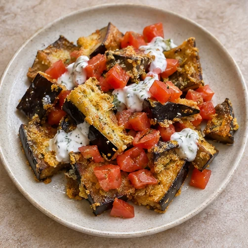
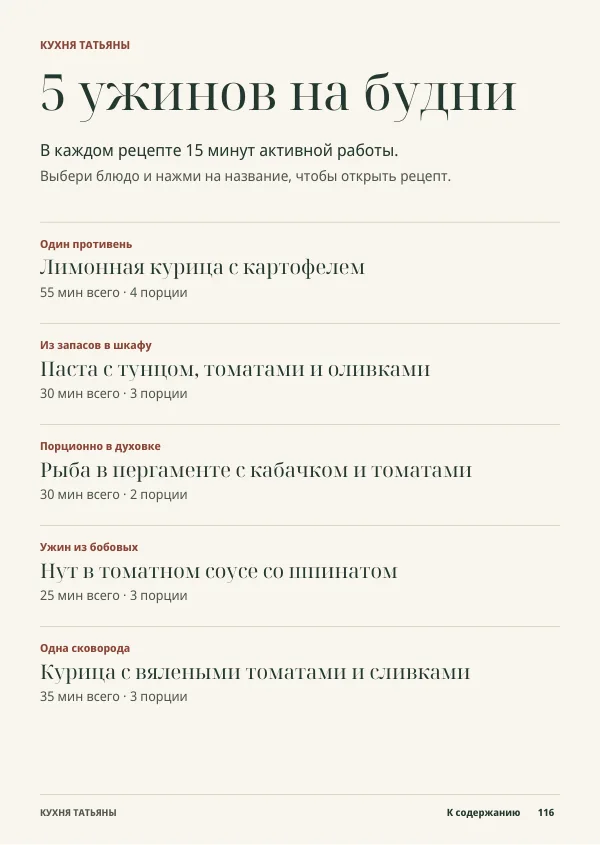
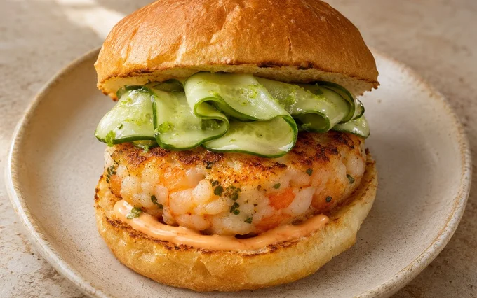
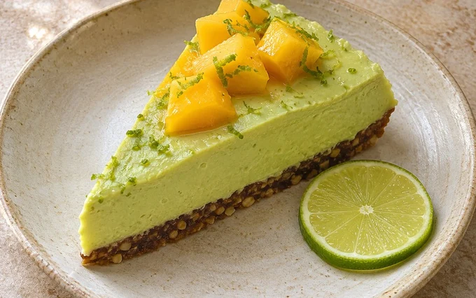

Шоколадный фондан с жидкой серединкой
Разрежь, и из середины потечёт тёплый шоколад. Начинку заморозь заранее.
Кулинарная книга в PDF
100 домашних рецептов, когда надоело готовить одно и то же. И ещё 50 в подарок в том же PDF.
25 без глютена и 25 без лактозы

Открой любой рецепт бесплатно. Внутри граммовки, пошаговое приготовление и КБЖУ.

Разрежь, и из середины потечёт тёплый шоколад. Начинку заморозь заранее.

На одной сковороде, в сливочном соусе с чесноком и базиликом.

Румяная корочка из духовки, сочные томаты и чесночный йогурт.
Фрагмент книги
На одной странице видно, что купить, сколько получится порций и что делать шаг за шагом.
Шоколадный фондан с текучей начинкой из ганаша
6 страниц PDF · без регистрации
В книге есть готовая подборка на будни. На подготовку и работу у плиты у каждого блюда уйдёт около 15 минут. Полное время указано рядом.

Две отдельные подборки в книге. К бонусному разделу можно перейти прямо с обложки.


100 домашних рецептов и 50 бонусных в одном PDF, который можно сохранить на телефоне.
Да. После оплаты откроется один PDF с основной книгой и обеими подборками. Ссылка на бонус есть прямо на обложке.
Это разные подборки по 25 блюд. В безглютеновых рецептах могут быть молочные продукты, а в безлактозных — пшеница. Состав указан в каждой карточке.
Три полных рецепта из книги с фото, граммовками, шагами и КБЖУ. Фрагмент можно прочитать на странице или сохранить в PDF.
Да. PDF открывается в обычной программе для чтения, а кликабельное оглавление помогает перейти прямо к нужному рецепту.
Большинство блюд готовится на сковороде, в кастрюле или духовке. Посуда и техника указаны в самом рецепте.
Активное время — подготовка и работа у плиты. Общее включает готовку в духовке и на плите. Охлаждение или маринование прибавь отдельно, если они вынесены за основное время.